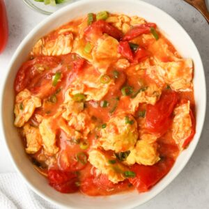

Une salade de carottes râpées fraîche et croquante, agrémentée d'une vinaigrette au miel et à la moutarde. Parfaite en accompagnement ou en entrée.
4 carottes
2 oignons verts
1/4 de tasse de persil
1/4 de tasse de coriandre
1.5 cuillère à thé de moutarde de Dijon
1 cuillère à soupe de miel
2 cuillères à soupe de jus de citron
4 cuillères à soupe d'huile d'olive extra vierge
1/2 cuillère à thé de sel
1/4 cuillère à thé de poivre
Éplucher et râper les carottes.
Couper les oignons verts, le persil et la coriandre finement.
Dans un bol, mélanger la moutarde de Dijon, le miel, le jus de citron, l'huile d'olive, le sel et le poivre pour faire la vinaigrette.
Dans un grand saladier, mélanger les carottes râpées, les oignons verts, le persil et la coriandre.
Verser la vinaigrette sur la salade et bien mélanger.
Placer au réfrigérateur pendant au moins 30 minutes avant de servir.
Tofu général Tao
Un plat végétarien savoureux et épicé
Un tofu croustillant enrobé d'une sauce sucrée et épicée, inspiré du célèbre poulet général Tao. Parfait pour un repas végétarien réconfortant.
Pour le tofu :
1 bloc de tofu extra ferme
1 cuillère à soupe de sauce soya
1 cuillère à soupe de sirop d'érable
1 cuillère à soupe de vinaigre de riz
1/4 de tasse de levure alimentaire
2 cuillères à soupe de fécule de maïs
2 cuillères à soupe d'huile végétale
Pour la sauce :
2 cuillères à soupe de sauce soya
3 cuillères à soupe de sirop d'érable
1 cuillère à soupe de vinaigre de riz
2 cuillères à thé de sriracha
2 cuillères à thé d'huile de sésame grillé
1 tasse d'eau
1 cuillère à soupe de fécule de maïs
1 cuillère à soupe d'huile végétale
2 gousses d'ail hachées
1 oignon coupé
1/2 cuillère à thé de sel
1 cuillère à soupe de ketchup
2 oignons verts
Graines de sésame
Pour le tofu :
Pressez le tofu pour retirer l'excédent d'eau.
Dans un bol et avec vos mains, défaites le tofu en morceaux de la grosseur d'une bouchée. Versez la sauce soya, le sirop d'érable et le vinaigre de riz sur le tofu. Mélangez le tout pour bien enrober chaque morceau.
Ajoutez la levure alimentaire, la fécule de maïs et l'huile, puis mélangez de nouveau.
Mettez le tofu dans le panier de cuisson de la friteuse à air. Faites cuire le tofu de 9 à 11 minutes à 375 °F, jusqu'à ce qu'il soit bien doré.
Pour la sauce :
Dans un petit bol, mettez la sauce soya, le sirop d'érable, le vinaigre de riz, la sauce sriracha, l'huile de sésame grillé, l'eau et la fécule de maïs. Mélangez la sauce.
Dans une poêle à feu moyen-vif, faites chauffer l'huile. Ajoutez l'ail et une pincée de sel et faites sauter quelques secondes.
Ajoutez le ketchup et poursuivez la cuisson quelques secondes.
Ajoutez l'oignon et faites sauter 2 minutes.
Versez la sauce dans la poêle et mélangez-la bien. Laissez-la réduire 3 minutes.
Ajoutez le tofu et faites-le cuire de 3 à 4 minutes, jusqu'à ce que la sauce soit bien épaisse.
Garnissez le tout de graines de sésame et d'oignons verts tranchés finement.

Oeufs Tomates
Un plat classique chinois réconfortant
Des œufs brouillés crémeux servis avec des tomates mijotées dans une sauce sucrée et savoureuse. Un plat simple mais délicieux.
4 tomates roma mûres coupées en quartiers (ou substituer par 2 grosses tomates)
6 œufs
1 oignon vert finement haché
1/4 de tasse d'eau
1 cuillère à thé d'huile de sésame
2 cuillères à thé d'huile
Pour la sauce :
3 cuillères à soupe de ketchup
1/2 cuillère à soupe de fécule de maïs
1 cuillère à thé de sucre
1/2 cuillère à thé de sel
1/2 tasse d'eau
Dans un bol, mélangez les ingrédients de la sauce et mettez de côté.
Dans un autre bol, cassez vos œufs et ajoutez l'huile de sésame. Battez les œufs et l'huile de sésame pendant 20 à 30 secondes.
Chauffez une poêle antiadhésive à feu moyen. Une fois que la poêle est chaude, ajoutez 1 cuillère à café d'huile. Une fois l'huile chaude, ajoutez le mélange d'œufs. Brouillez les œufs jusqu'à ce qu'ils prennent forme mais restent brillants et humides. Ne les faites pas trop cuire. Retirez les œufs cuits de la poêle.
De retour dans la poêle, ajoutez l'huile restante et les oignons verts. Faites cuire pendant 5 secondes ou jusqu'à ce qu'ils dégagent leur parfum.
Ajoutez les tomates et l'eau. Laissez cuire les tomates pendant 2 à 3 minutes jusqu'à ce qu'elles ramollissent et que la peau commence à se détacher.
Versez la sauce sur les tomates. Laissez mijoter la sauce et épaissir légèrement, environ 2 minutes.
Une fois que la sauce est légèrement plus épaisse, ajoutez les œufs et pliez-les délicatement dans la sauce et les tomates. Retirez du feu. Servez et dégustez. Facultatif : garnissez de plus d'oignons verts.
Cold Noodles
Rafraîchissant et parfait pour l'été
Des nouilles froides servies dans un bouillon acidulé et rafraîchissant, garnies de légumes croquants et d'œufs. Idéal pour les journées chaudes.
Soup:
1L water
500ml Sprite
40ml Rice vinegar
40ml Apple cider vinegar
4 tablespoons Sugar
1 teaspoon Soy sauce
1 teaspoon Salt
1 cucumber, sliced
1 onion, diced
1 lemon, quartered
Coriander, chopped
Garnish:
Thinly sliced Radish
Kimchi
Boiled eggs
Mix water, rice vinegar, apple cider vinegar, sugar, soy sauce, Sprite, cucumber, onion, lemon, and coriander in a bowl.
Let the mixture sit in the fridge for a while.
Cook the cold noodles.
Add the mixture to the noodles and add the extra ingredients like radish, kimchi, and eggs.
Pico de Gallo
Une salsa fraîche et piquante
Une salsa mexicaine classique faite de tomates fraîches, d'oignons, de coriandre et de citron vert. Parfaite pour accompagner vos tacos, burritos ou chips.
3 Small tomatoes, diced
1 Medium onion, diced
Juice of 4 limes
Cilantro, chopped
Clamato juice
Tabasco sauce
Salt and pepper to taste
In a bowl, combine diced tomatoes, diced onion, and chopped cilantro.
Squeeze the juice of 4 limes into the bowl and stir well.
Add Clamato juice to taste.
Add Tabasco sauce to taste.
Season with salt and pepper to taste.
Stir everything together and let the pico de gallo sit for at least 15 minutes to allow the flavors to meld.
Serve chilled with tortilla chips, tacos, burritos, or your favorite Mexican dish.
Pickled Onions
Des oignons marinés acidulés et croquants
Des oignons rouges marinés dans un mélange de vinaigre, de sucre et de sel. Parfaits pour ajouter une touche acidulée à vos tacos, burgers, sandwiches ou salades.
½ cup Apple cider vinegar
½ cup Warm water
1 Tbsp. Sugar
1½ tsp. Salt
1 Red onion, thinly sliced
In a small saucepan, combine apple cider vinegar, warm water, sugar, and salt. Heat over medium heat until the sugar and salt dissolve. Remove from heat and let the pickling liquid cool slightly.
Place the thinly sliced red onion in a jar.
Pour the cooled pickling liquid over the onions, ensuring they are completely submerged.
Seal the jar tightly and refrigerate for at least 2 hours, or ideally overnight, for the flavors to develop.
Pickled onions can be stored in the refrigerator for up to 2 weeks.
Enjoy pickled onions on tacos, burgers, sandwiches, salads, or as a flavorful garnish for any dish.
Steamed Egg
Un plat d'œufs vapeur délicat et crémeux
Des œufs cuits à la vapeur pour obtenir une texture lisse et crémeuse. Un plat réconfortant.
1 tasse d'eau chaude
4 oeufs
Oignons verts, hachés
Sel et poivre noir
1 cuillère à soupe d'huile d'olive
Prepare a steamer by filling a pot with water and bringing it to a boil.
In a small bowl, whisk together salt, black pepper, and a little bit of hot water (just enough to dissolve the salt and pepper).
In a large bowl, whisk together eggs and olive oil.
Gradually add the hot water (1 cup) to the egg mixture while whisking constantly to temper the eggs and prevent them from scrambling.
Add the seasoned water (from step 2) and chopped green onions to the egg mixture and stir well to combine.
Choose bowls suitable for steaming and ensure they leave about 1.5 inches of space at the top. Divide the egg mixture evenly among the bowls.
Carefully place the bowls in the steamer basket and steam for 8 minutes once hot vapor starts coming out.
Turn off the heat and let the egg pudding sit in the steamer for an additional 2-3 minutes with the lid closed.
Carefully remove the bowls from the steamer and let them cool slightly before serving.
Marinated Daikon Radish
Un accompagnement coréen épicé et croquant
Du radis daikon mariné dans une sauce épicée et sucrée. Un banchan coréen classique qui ajoute de la fraîcheur et du croquant à vos repas.
Main:
750g Daikon radish, peeled
2 Tbsp Green onion (optional), finely chopped
Sauce (Mix these in a bowl):
1 Tbsp Gochugaru
1 Tbsp Oyster Sauce
1 Tbsp Sugar
1/2 Tbsp Minced garlic
1 tsp salt
Julienne the daikon radish using a knife or a mandolin slicer. Aim for matchstick-style pieces about 6 cm to 7 cm (2.5 inches) long.
Place the julienned radish in a mixing bowl.
Combine all sauce ingredients (Gochugaru, oyster sauce, sugar, garlic, and salt) in a separate bowl and mix well.
Pour the sauce over the daikon radish in the mixing bowl and use your hands to toss and coat the radish evenly.
(Optional) Garnish with finely chopped green onion.
Transfer the seasoned radish to a glass container. Refrigerate for at least 30 minutes to allow the flavors to develop. You can enjoy it right away, or store it in the refrigerator for 5 to 7 days.

 4 carottes
4 carottes
 2 oignons verts
2 oignons verts
 1/4 de tasse de persil
1/4 de tasse de persil
 1/4 de tasse de coriandre
1/4 de tasse de coriandre
 1.5 cuillère à thé de moutarde de Dijon
1.5 cuillère à thé de moutarde de Dijon
 1 cuillère à soupe de miel
1 cuillère à soupe de miel
 2 cuillères à soupe de jus de citron
2 cuillères à soupe de jus de citron
 4 cuillères à soupe d'huile d'olive extra vierge
4 cuillères à soupe d'huile d'olive extra vierge
 1/2 cuillère à thé de sel
1/2 cuillère à thé de sel
 1/4 cuillère à thé de poivre
1/4 cuillère à thé de poivre